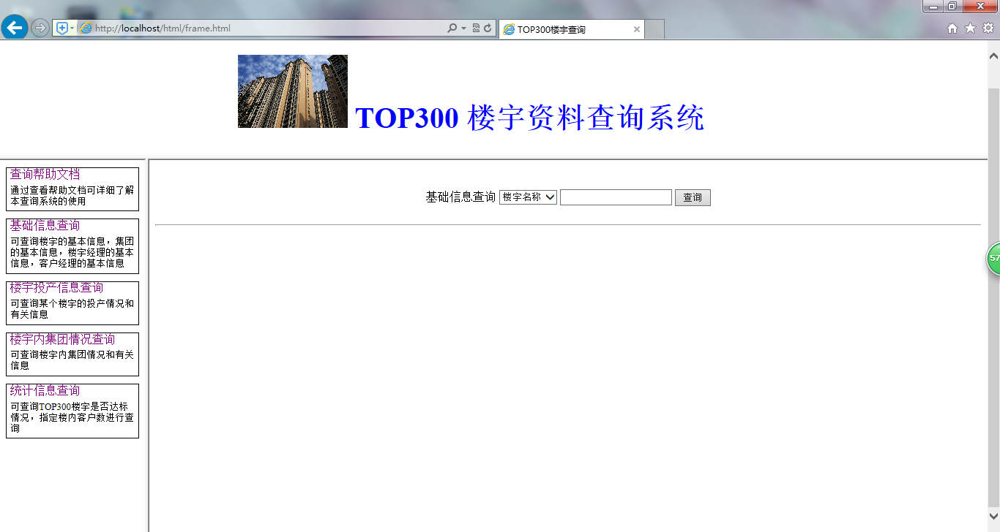

查询帮助文档
1,通过internet浏览器查询需要数据
(1)打开internet浏览器,输入服务器电脑的IP地址,将会转跳到以下界面:

在左边列表栏有四个可转跳的连接,分别指向不同网页。对应着”查看帮助文档””基础信息查询””楼宇投产信息查询””楼宇内集团情况查询””统计信息查询”
(2)”基础信息查询”页面如下:
选择需要查询的内容,并输入进行查询.
(3)”楼宇投产信息查询”页面对应如下:
可查询投产/未投产的全部楼宇,也可以输入确定的楼宇名字查询投产情况.
(4)”楼宇内集团情况查询”页面如下:
输入您要查询的楼宇,直接查询该楼宇内部的全部集团情况
(5)”统计信息查询”页面如下:
可查询全部达标/非达标楼宇并统计数量,也可查询指定楼内客户数的楼宇并统计数量.